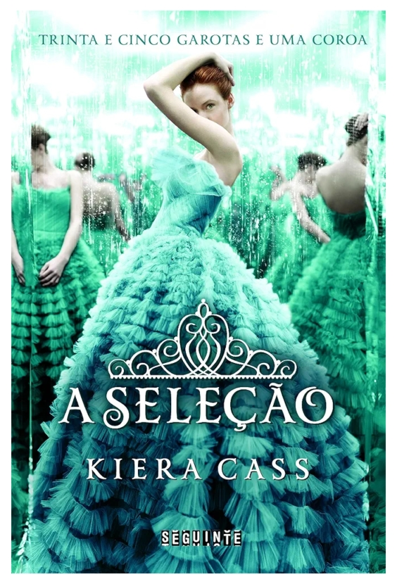

A seleção - Kiera Cass
Sinopse
Muitas garotas sonham em ser princesas, mas este não é o caso de America Singer. Ela topa se inscrever na Seleção só para agradar a mãe, certa de que não será sorteada para participar da competição em que o príncipe escolherá sua futura esposa. Mas é claro que depois disso sua vida nunca mais será a mesma...
Para trinta e cinco garotas, a Seleção é a chance de uma vida. É a oportunidade de ser alçada a um mundo de vestidos deslumbrantes e joias valiosas. De morar em um palácio, conquistar o coração do belo príncipe Maxon e um dia ser a rainha.
America Singer, no entanto, estar entre as Selecionadas é um pesadelo. Significa deixar para trás o rapaz que ama. Abandonar sua família e seu lar para entrar em uma disputa ferrenha por uma coroa que ela não quer. E viver em um palácio sob a ameaça constante de ataques rebeldes.
Então America conhece pessoalmente o príncipe - e percebe que a vida com que sempre sonhou talvez não seja nada comparada ao futuro que nunca tinha ousado imaginar.